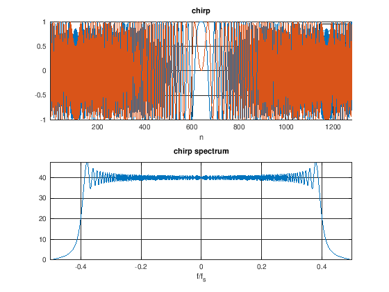
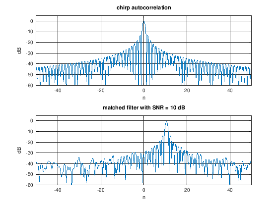

Octave in JupyterLabs¶
Octave is a good alternative to matlab. Octave can execute most .m files and doesn’t have the Jupyter configuration/compatibility issues that Matlab has.
Installation¶
First install octave:
brew install octave
Once jupyterLab is installed and working, install the octave kernel:
pip install octave_kernel
If SOS is installed, octave support can be installed (same for both matlab and octave) with:
pip install sos-matlab
Using Jupyter Octave Kernel¶
Here is an additional octave notebook example
Calling Matlab Functions¶
Matlab functions can be called from .m files using Octave. In this example, .m files are located in ./tools/matlab.
Read a Waveform File¶
[44]:
addpath ./tools/matlab/
% read binary waveform file (chirp with .80 fractional BW)
s = file2wave('./tools/waveforms/chirp80.bin');
% remove pre-appended zeros
s = s(512:end);
% normalize complex int16 signal scale
s = s./(2^15);
Plot Waveform and Spectrum¶
[45]:
% plot waveform
figure;
subplot(2,1,1);
hold on;
plot(real(s));
plot(imag(s));
title('chirp'); xlabel('n');
grid on; xlim([1,numel(s)]);
legend('I','Q');
% plot spectrum
sfft = fftshift(fft(s));
f_norm = linspace(-.5,.5,numel(sfft));
subplot(2,1,2);
plot(f_norm,abs(sfft));
title('chirp spectrum'); xlabel('f/f_s');
grid on; axis tight;

Apply Matched Filter¶
[63]:
% matched filter and upsample using './tools/matlab/mfiltu.m'
upfac = 4;
[d,l] = mfiltu(s,s,upfac);
d = d./numel(d);
figure;
subplot(2,1,1);
plot(l/upfac,20*log10(abs(d)));
title('chirp autocorrelation'); xlabel('n'); ylabel('dB');
grid on; xlim([-50,50]); ylim([-60,5]);
% shift signal and add noise
snr = 10; %db
r = [s,zeros(1,128)];
noise = (10^(-snr/20))*(1/sqrt(2))*(randn(1,numel(r))+1i*randn(1,numel(r)));
r = shift(r,10.5) + noise;
% matched filter and upsample
[d1,l1] = mfiltu(r,s,upfac);
d1 = d1./numel(d1);
subplot(2,1,2);
plot(l1/upfac,20*log10(abs(d1)));
title(sprintf('matched filter with SNR = %g dB',snr)); xlabel('n'); ylabel('dB');
grid on; xlim([-50,50]); ylim([-60,5]);

[ ]: